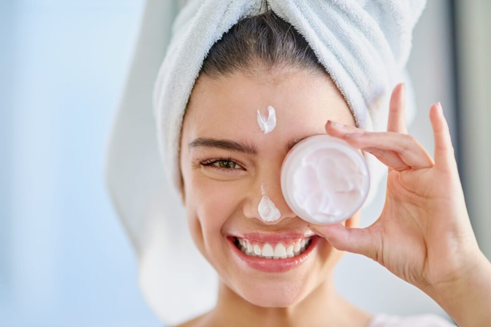
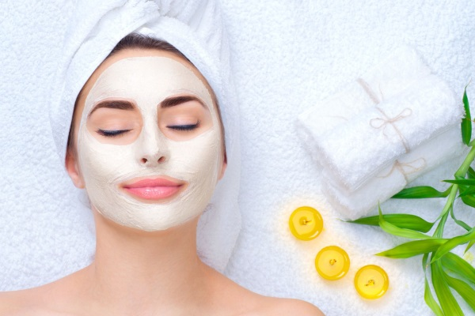
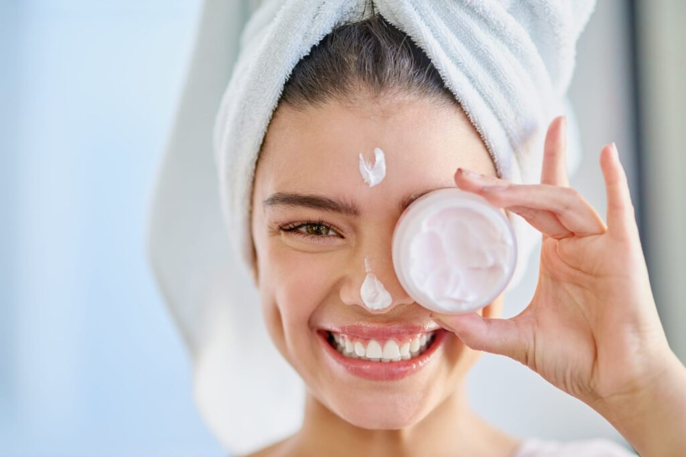
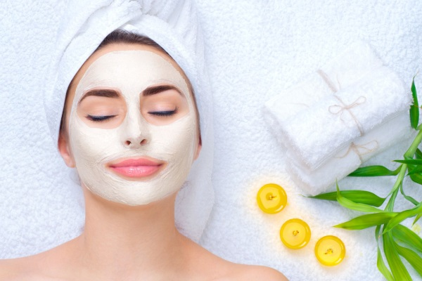

Косметология

 

Современная косметология обладает двумя основными достоинствами: исключительно безоперационное вмешательство и
ценовая доступность. Все манипуляции, выполняемые косметологом, осуществляются посредством максимально щадящих
средств и технологий (например, подтяжка лица выполняется с помощью масок и специальных разглаживающих сывороток,
без инъекций). В перечень преимуществ эстетической косметологии по праву можно внести отсутствие восстановительного
периода.


Современная косметология обладает двумя основными достоинствами: исключительно безоперационное вмешательство и
ценовая доступность. Все манипуляции, выполняемые косметологом, осуществляются посредством максимально щадящих
средств и технологий (например, подтяжка лица выполняется с помощью масок и специальных разглаживающих сывороток,
без инъекций). В перечень преимуществ эстетической косметологии по праву можно внести отсутствие восстановительного
периода.
Косметолог эстетист в студии готов предложить следующий перечень услуг:
- массажные техники;
- СПА-процедуры;
- пилинг (механическая, ультразвуковая чистка лица, тела);
- лифтинг;
- криотерапия;
- липосакция без хирургического вмешательства;
- мезотерапия;
- контурная пластика;
Это зависит не только от кожи, но и от выбранного типа массажа лица. Самый распространенный – косметический массаж. Он делается с использованием специального крема или масла, которые подбираются с учетом особенностей кожи клиента. Например, если кожа сухая и склонна шелушиться, то используется питательный крем, при жирной работают по гелю. Популярностью пользуется пластический массаж лица, которому свойственны прижимающие сильные движения. Такой массаж показан для тонкой кожи, на которой легко развиваются мимические складки – в этом случае массажисты используют только тальк, без специальных кремов. А щипковый массаж лица сопровождают антибактериальным тальком: его антисептические свойства весьма кстати при лечении проблемной кожи.